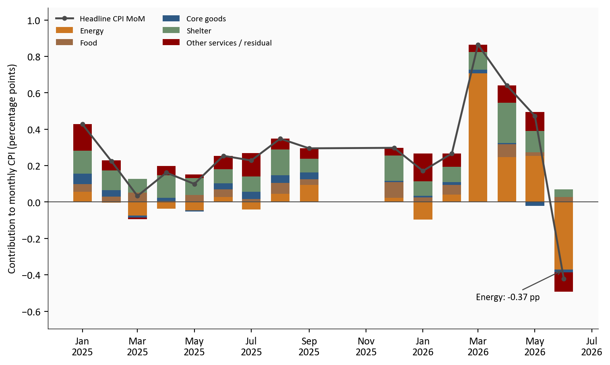
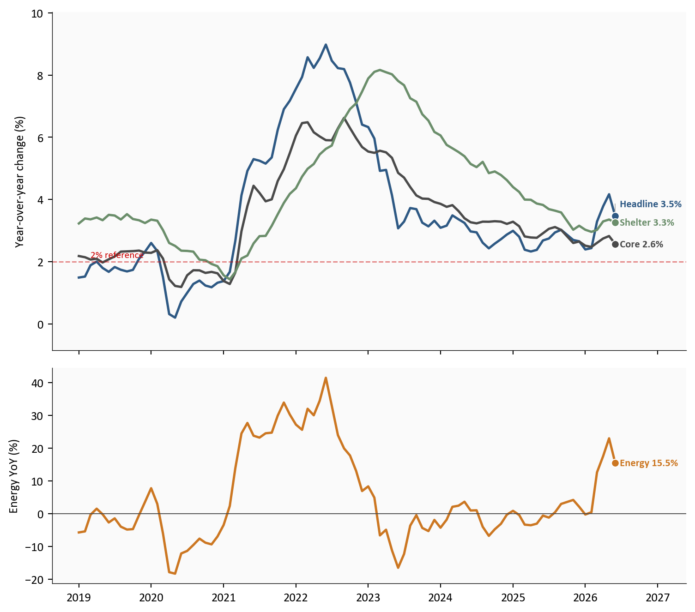
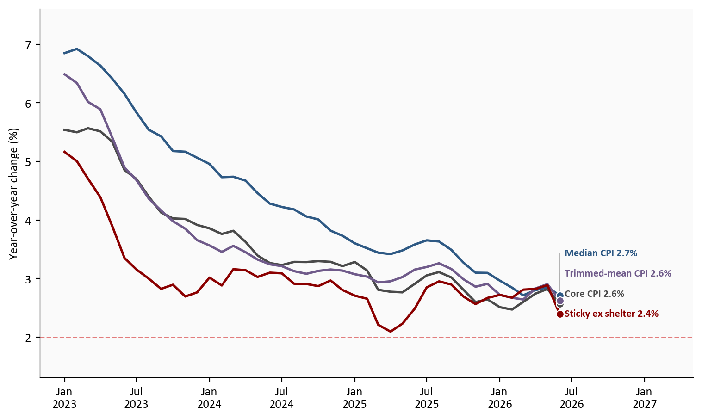
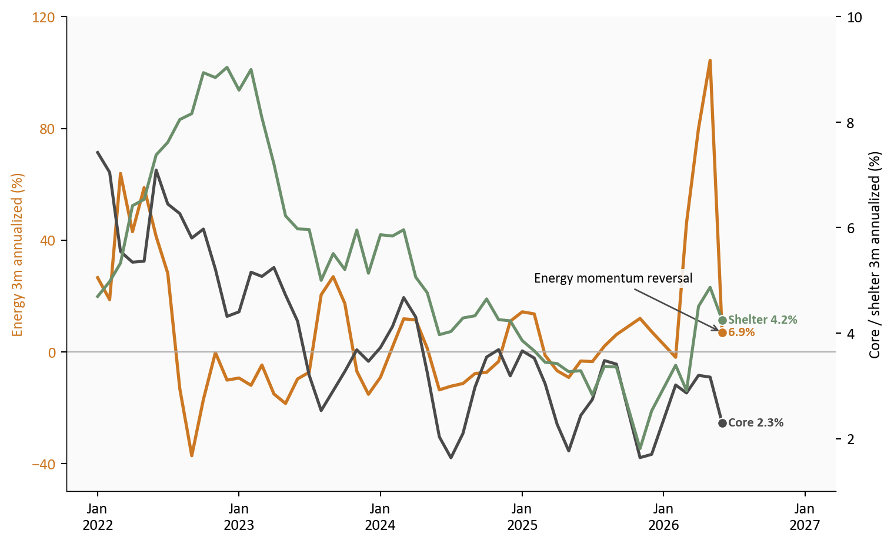
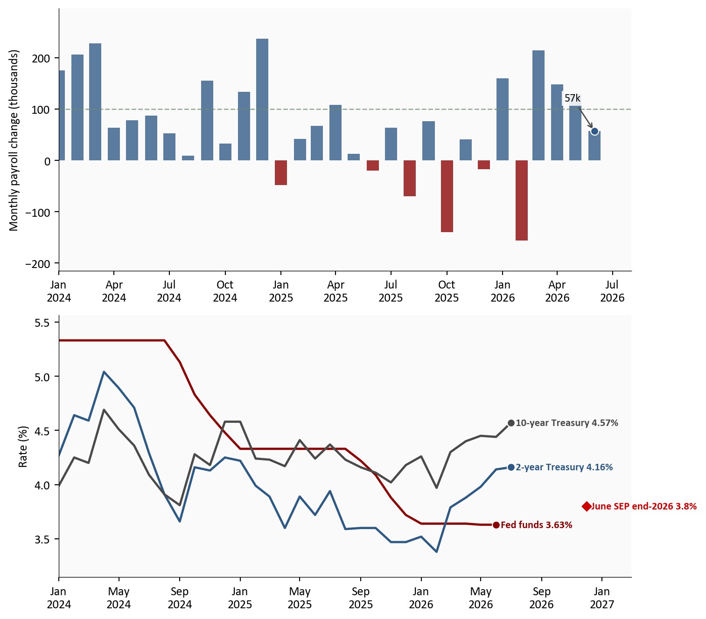

Headline CPI YoY
3.5%
From 4.2%
Monthly headline CPI
-0.4%
Jun 2026
Energy CPI MoM
-5.7%
Gasoline -9.7%
Core CPI YoY
2.6%
Shelter 3.3%
Latest CPI data: June 2026 | Source: BLS via FRED
Yoram Gilboa
July 18, 2026
Latest CPI data: June 2026 | Source: BLS via FRED
June inflation delivered immediate relief at the gas pump but did not settle the debate over underlying price pressure. Headline CPI fell -0.4% in June 2026, lowering its year-over-year rate to 3.5% from 4.2% in May. Energy prices dropped -5.7%, including a -9.7% gasoline decline after the ceasefire-related commodity shock. Core CPI still stood 2.6% above a year earlier, and shelter inflation remained 3.3%.
The distinction between monthly and annual inflation is essential. June’s energy reversal subtracted approximately -0.4 percentage points from the monthly headline reading. Yet energy prices remained 15.5% above their year-earlier level because the earlier shock had not disappeared from the annual comparison. June therefore marks a sharp reversal in the latest flow of inflation, not the complete removal of energy from the inflation rate.
The complete pipeline is included with this post:
01_fetch_data.py downloads CPI, labor, Treasury, and FOMC projection series from FRED.02_clean_data.py calculates monthly, yearly, momentum, and approximate contribution measures.04_compute_stats.py writes every value used in the prose and metric cards to stats/summary_stats.json.The contribution estimates use rounded December 2025 CPI relative-importance shares from the BLS relative-importance tables. They are directional approximations rather than the official chained BLS decomposition.
The contribution view uses the month-over-month horizon that matches June’s -0.4% change. Energy, food, core goods, and shelter use fixed relative-importance weights. Other services and residual absorbs the remaining services, interaction effects, and fixed-weight approximation error.
Energy’s monthly contribution was deeply negative even though its year-over-year contribution remained positive. The practical takeaway is narrow but important: without the energy reversal, June would not have produced the same headline decline.
plot = df.loc["2025-01-01":, [
"headline_mom",
"contrib_energy_mom_pp",
"contrib_food_mom_pp",
"contrib_core_goods_mom_pp",
"contrib_shelter_mom_pp",
"contrib_other_services_mom_pp",
]].dropna()
components = [
("Energy", "contrib_energy_mom_pp", COLORS["warning"]),
("Food", "contrib_food_mom_pp", COLORS["food"]),
("Core goods", "contrib_core_goods_mom_pp", COLORS["primary"]),
("Shelter", "contrib_shelter_mom_pp", COLORS["secondary"]),
("Other services / residual", "contrib_other_services_mom_pp", COLORS["accent"]),
]
fig, ax = plt.subplots(figsize=(8, 4.8))
positive_bottom = np.zeros(len(plot))
negative_bottom = np.zeros(len(plot))
for label, column, color in components:
values = plot[column].to_numpy()
positive = np.where(values > 0, values, 0)
negative = np.where(values < 0, values, 0)
ax.bar(plot.index, positive, bottom=positive_bottom, width=20,
color=color, label=label)
ax.bar(plot.index, negative, bottom=negative_bottom, width=20, color=color)
positive_bottom += positive
negative_bottom += negative
ax.plot(plot.index, plot["headline_mom"], color=COLORS["neutral"],
linewidth=1.8, marker="o", markersize=3.5, label="Headline CPI MoM")
ax.axhline(0, color=COLORS["neutral"], linewidth=0.8)
latest_date = plot.index[-1]
energy_value = plot.iloc[-1]["contrib_energy_mom_pp"]
ax.annotate(
f"Energy: {energy_value:+.2f} pp",
xy=(latest_date, energy_value),
xytext=(-82, -28),
textcoords="offset points",
arrowprops=dict(arrowstyle="->", color=COLORS["neutral"], lw=1),
bbox=dict(facecolor="#fafafa", edgecolor="none", alpha=0.9, pad=2),
fontsize=9,
zorder=5,
)
ax.set_ylabel("Contribution to monthly CPI (percentage points)")
ax.xaxis.set_major_formatter(mdates.DateFormatter("%b\n%Y"))
ax.legend(loc="upper left", fontsize=8, frameon=False, ncol=2)
ax.margins(y=0.15)
plt.tight_layout()
Source: BLS CPI data via FRED, with approximate fixed-weight contributions using BLS relative-importance shares.
Separating energy into its own panel keeps the slower-moving series visible. Headline CPI fell rapidly between May and June, but core eased only from 2.8% to 2.6%, and shelter remained at 3.3%. The June print improved the direction of travel; it did not show that broad inflation had already returned to a stable 2% pace.
plot = df.loc["2019-01-01":].copy()
fig, (ax1, ax2) = plt.subplots(
2, 1, figsize=(8, 7), sharex=True, height_ratios=[2.2, 1.4]
)
top_series = [
("Headline", "headline_yoy", COLORS["primary"]),
("Core", "core_yoy", COLORS["neutral"]),
("Shelter", "shelter_yoy", COLORS["secondary"]),
]
top_entries = []
for label, column, color in top_series:
series = plot[column].dropna()
ax1.plot(series.index, series, color=color, linewidth=1.9)
ax1.scatter(series.index[-1], series.iloc[-1], s=40, color=color,
edgecolors="white", linewidth=0.8, zorder=5)
top_entries.append({
"x": series.index[-1],
"y": series.iloc[-1],
"text": f"{label} {series.iloc[-1]:.1f}%",
"color": color,
})
ax1.axhline(2, color=COLORS["fed_target"], linestyle="--", linewidth=1, alpha=0.5)
ax1.text(plot.index[2], 2.13, "2% reference", color=COLORS["fed_target"], fontsize=8)
ax1.set_ylabel("Year-over-year change (%)")
ax1.margins(y=0.12)
label_endpoints(ax1, top_entries)
energy = plot["energy_yoy"].dropna()
ax2.plot(energy.index, energy, color=COLORS["warning"], linewidth=1.9)
ax2.scatter(energy.index[-1], energy.iloc[-1], s=40, color=COLORS["warning"],
edgecolors="white", linewidth=0.8, zorder=5)
ax2.text(energy.index[-1], energy.iloc[-1],
f" Energy {energy.iloc[-1]:.1f}%", color=COLORS["warning"],
fontsize=8.5, fontweight="bold", va="center")
ax2.axhline(0, color=COLORS["neutral"], linewidth=0.7)
ax2.set_ylabel("Energy YoY (%)")
ax2.xaxis.set_major_formatter(mdates.DateFormatter("%Y"))
date_range = plot.index[-1] - plot.index[0]
ax1.set_xlim(right=plot.index[-1] + date_range * 0.12)
plt.tight_layout()
fig.savefig(IMG_DIR / "cpi-energy-reversal-dashboard.png",
dpi=150, bbox_inches="tight")
Source: BLS CPI data via FRED.
The next test is whether June’s improvement extends beyond volatile categories. Median CPI, trimmed-mean CPI, and sticky CPI excluding food, energy, and shelter ranged from 2.4% to 2.7%, close to core CPI’s 2.6%. Their convergence is real progress, but the Fed still needs evidence that this range will move closer to 2%.
plot = df.loc["2023-01-01":].copy()
underlying = [
("Core CPI", "core_yoy", COLORS["neutral"]),
("Median CPI", "median_cpi_yoy", COLORS["primary"]),
("Trimmed-mean CPI", "trimmed_mean_cpi_yoy", COLORS["purple"]),
("Sticky ex shelter", "sticky_ex_shelter_yoy", COLORS["accent"]),
]
fig, ax = plt.subplots(figsize=(8, 4.8))
entries = []
for label, column, color in underlying:
series = plot[column].dropna()
ax.plot(series.index, series, color=color, linewidth=1.9)
ax.scatter(series.index[-1], series.iloc[-1], s=40, color=color,
edgecolors="white", linewidth=0.8, zorder=5)
entries.append({
"x": series.index[-1],
"y": series.iloc[-1],
"text": f"{label} {series.iloc[-1]:.1f}%",
"color": color,
})
ax.axhline(2, color=COLORS["fed_target"], linestyle="--", linewidth=1, alpha=0.5)
ax.set_ylabel("Year-over-year change (%)")
ax.xaxis.set_major_formatter(mdates.DateFormatter("%b\n%Y"))
ax.margins(y=0.14)
label_endpoints(ax, entries)
date_range = plot.index[-1] - plot.index[0]
ax.set_xlim(right=plot.index[-1] + date_range * 0.24)
plt.tight_layout()
The three-month annualized view clarifies the timing. Energy momentum dropped sharply after its early-2026 spike, while core and shelter remained positive. That leads directly to labor: energy can normalize without weaker demand, but persistent service inflation is more likely to cool when hiring and wage pressure also soften.
plot = df.loc["2022-01-01":].copy()
fig, ax1 = plt.subplots(figsize=(8, 4.9))
ax2 = ax1.twinx()
energy = plot["energy_ann3"].dropna()
ax1.plot(energy.index, energy, color=COLORS["warning"], linewidth=2)
ax1.scatter(energy.index[-1], energy.iloc[-1], s=40, color=COLORS["warning"],
edgecolors="white", linewidth=0.8, zorder=5)
ax1.set_ylabel("Energy 3m annualized (%)", color=COLORS["warning"])
ax1.tick_params(axis="y", labelcolor=COLORS["warning"])
ax1.axhline(0, color=COLORS["light"], linewidth=0.8)
right_entries = []
for label, column, color in [
("Core", "core_ann3", COLORS["neutral"]),
("Shelter", "shelter_ann3", COLORS["secondary"]),
]:
series = plot[column].dropna()
ax2.plot(series.index, series, color=color, linewidth=1.9)
ax2.scatter(series.index[-1], series.iloc[-1], s=40, color=color,
edgecolors="white", linewidth=0.8, zorder=5)
right_entries.append({
"x": series.index[-1],
"y": series.iloc[-1],
"text": f"{label} {series.iloc[-1]:.1f}%",
"color": color,
})
ax2.set_ylabel("Core / shelter 3m annualized (%)")
ax2.grid(False)
ax1.set_ylim(-50, 120)
ax2.set_ylim(1, 10)
ax1.set_yticks([-40, 0, 40, 80, 120])
ax2.set_yticks([2, 4, 6, 8, 10])
label_endpoints(ax2, right_entries)
ax1.annotate(
"Energy momentum reversal",
xy=(energy.index[-1], energy.iloc[-1]),
xytext=(-120, 32),
textcoords="offset points",
arrowprops=dict(arrowstyle="->", color=COLORS["neutral"], lw=1),
bbox=dict(facecolor="#fafafa", edgecolor="none", alpha=0.9, pad=2),
fontsize=9,
zorder=5,
)
ax1.text(energy.index[-1], energy.iloc[-1],
f" {energy.iloc[-1]:.1f}%", color=COLORS["warning"],
fontsize=8.5, fontweight="bold", va="center")
ax1.xaxis.set_major_formatter(mdates.DateFormatter("%b\n%Y"))
date_range = plot.index[-1] - plot.index[0]
ax1.set_xlim(right=plot.index[-1] + date_range * 0.16)
plt.tight_layout()
Source: BLS CPI data via FRED, author’s annualized calculations.
Payrolls rose 57 thousand in June 2026, and the three-month average slowed to 111 thousand. With unemployment at 4.2%, the labor market is cooling rather than collapsing. An energy-only CPI decline would offer the Fed limited comfort. Paired with softer hiring, it reduces the need to hold policy restrictive solely as inflation insurance.
The rates panel explains why this is not yet a straightforward easing signal. The effective federal funds rate was 3.6%, versus two-year and ten-year Treasury yields of 4.2% and 4.6%. The June SEP placed the median end-2026 policy rate at 3.8%, slightly above the current effective rate and well above the 3.1% longer-run estimate.
plot = df.loc["2024-01-01":].copy()
fig, (ax1, ax2) = plt.subplots(2, 1, figsize=(8, 7))
payroll = plot["payroll_change_k"].dropna()
bar_colors = [
COLORS["primary"] if value >= 0 else COLORS["accent"]
for value in payroll
]
ax1.bar(payroll.index, payroll, width=20, color=bar_colors, alpha=0.78)
ax1.axhline(100, color=COLORS["secondary"], linestyle="--", linewidth=1, alpha=0.7)
ax1.scatter(payroll.index[-1], payroll.iloc[-1], s=40, color=COLORS["primary"],
edgecolors="white", linewidth=0.8, zorder=5)
ax1.annotate(
f"{payroll.iloc[-1]:.0f}k",
xy=(payroll.index[-1], payroll.iloc[-1]),
xytext=(-24, 24),
textcoords="offset points",
arrowprops=dict(arrowstyle="->", color=COLORS["neutral"], lw=1),
bbox=dict(facecolor="#fafafa", edgecolor="none", alpha=0.9, pad=2),
fontsize=9,
)
ax1.set_ylabel("Monthly payroll change (thousands)")
ax1.margins(y=0.15)
ax1.xaxis.set_major_formatter(mdates.DateFormatter("%b\n%Y"))
ax1.set_xlim(left=plot.index[0], right=pd.Timestamp("2026-08-01"))
rate_series = [
("Fed funds", "fedfunds", COLORS["accent"]),
("2-year Treasury", "dgs2", COLORS["primary"]),
("10-year Treasury", "dgs10", COLORS["neutral"]),
]
rate_entries = []
for label, column, color in rate_series:
series = plot[column].dropna()
ax2.plot(series.index, series, color=color, linewidth=1.8)
ax2.scatter(series.index[-1], series.iloc[-1], s=40, color=color,
edgecolors="white", linewidth=0.8, zorder=5)
rate_entries.append({
"x": series.index[-1],
"y": series.iloc[-1],
"text": f"{label} {series.iloc[-1]:.2f}%",
"color": color,
})
sep_date = pd.Timestamp("2026-12-01")
sep_value = stats["fomc_median_eoy_2026"]
ax2.scatter(sep_date, sep_value, marker="D", s=48, color=COLORS["fed_target"],
edgecolors="white", linewidth=0.8, zorder=5)
ax2.text(sep_date, sep_value,
f" June SEP end-2026 {sep_value:.1f}%",
color=COLORS["fed_target"], fontsize=8.5, fontweight="bold", va="center")
ax2.set_ylabel("Rate (%)")
ax2.xaxis.set_major_formatter(mdates.DateFormatter("%b\n%Y"))
ax2.margins(y=0.12)
label_endpoints(ax2, rate_entries)
ax2.set_xlim(left=plot.index[0], right=pd.Timestamp("2027-03-01"))
plt.tight_layout()
June shifts the Fed’s reaction function toward patience. Lower headline inflation reduces the urgency to tighten, while softer hiring raises the cost of overtightening. Yet broad inflation between 2.4% and 2.7%, with shelter at 3.3%, does not justify an immediate easing sequence.
At the next meeting, a hold is the cleaner baseline. It lets the Committee test whether June’s energy relief passes into core services without responding too aggressively to one volatile component. A hike would require renewed core or shelter acceleration; a cut would require clearer labor deterioration than the current data show.
At the following meeting, the decision becomes more conditional. Another subdued core print, continued shelter slowing, and payroll growth near or below its recent pace would make easing more defensible. If hiring stabilizes and underlying inflation remains near its current range, another hold would better match the June SEP.
Market rates reinforce this cautious posture. The two-year yield at 4.2% sits above both the 3.6% effective rate and the 3.8% end-2026 SEP median. That gap does not signal confidence in rapid cuts. The 4.6% ten-year yield and 0.4 percentage-point positive curve also embed term premium and longer-run inflation uncertainty. Together, they suggest that bonds still require compensation for a restrictive and uncertain policy path.
For households: Lower gasoline and energy prices provide immediate cash-flow relief. The broader cost-of-living improvement will feel slower because shelter and service prices are still rising faster than 2%.
For investors: The energy reversal can lower near-term inflation breakevens and support short-duration bonds, but the two-year yield above the current policy rate limits the case for an aggressive duration extension. Longer-duration bonds need confirmation from core inflation and labor revisions. For equities, cheaper gasoline supports household cash flow and consumer-facing margins, while softer hiring argues against a broad cyclical-growth bet.
For policymakers: The dual mandate is becoming more balanced. Inflation is cooling but not finished, while weaker hiring raises the cost of staying restrictive for too long.
June delivered genuine inflation relief, but its strongest force was also its most volatile. The policy significance comes from the combination: energy reversed, broad inflation continued to cool, and hiring softened. That mix supports patience at the next meeting and creates a clearer path toward easing later, provided the next reports confirm that core and shelter pressure is fading rather than pausing.
| Series | Description | Source |
|---|---|---|
| CPIAUCSL, CPILFESL | Headline and core CPI indexes | FRED |
| CPIENGSL, CUSR0000SETB01 | Energy and gasoline CPI indexes | FRED |
| CUSR0000SAH1, CUSR0000SACL1E | Shelter and core goods CPI indexes | FRED |
| MEDCPIM159SFRBCLE, TRMMEANCPIM159SFRBCLE | Cleveland Fed median and trimmed-mean CPI | FRED |
| CRESTKCPIXSLTRM159SFRBATL | Atlanta Fed sticky CPI excluding food, energy, and shelter | FRED |
| PAYEMS, UNRATE | Payroll employment and unemployment | FRED |
| FEDFUNDS, DGS2, DGS10 | Policy and Treasury rates | FRED |
| FEDTARMD, FEDTARMDLR | FOMC median projected and longer-run policy rates | Federal Reserve |
Data current as of June 2026 CPI and labor data; Treasury data through July 16, 2026.